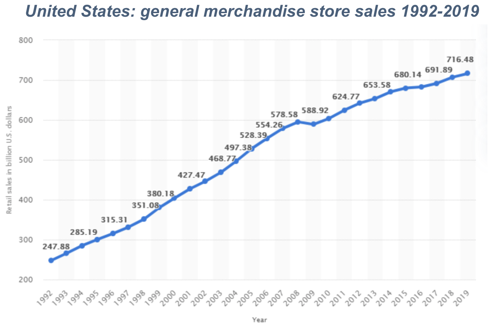

Scope
RETAIL INDUSTRY
Definition:
A business selling goods and services directly to end consumers intended for
personal use. (Account Learning, 2021)
GENERAL MERCHANDISER
Definition:
General Merchandise stores are those retail stores which sell a number of products
which are used by the general public but excludes certain items like food and grocery. (mbaskool. 2016)
This CTI analysis concentrates on general merchandisers with the following attributes:
- Support both physical store fronts
- Located throughout the continental US
- Host an online retailing presence (omnichannel sale.
- Sustains both perishable groceries as well as non-perishable goods.
Major industry players in this space include:
(Farfan, 2018)
Market Overview
Experienced healthy growth in the last 20 years growing from $248B in 1992 to $717B in 2019. (Statista, 2021)
BY THE NUMBERS
(in the US as of 2020)
- 7,676 retailers
- 42,321 locations
- Employed nearly one in five Americans (Kentley Insights, 2021)
Growing E-commerce Revenues
- Most support a hybrid model of brick-and-mortar stores as well as an e-commerce site allowing consumers
to shop in many
combinations of online and in person
-
As 2020, online sales typically account for 14% of total sales (US Census, 2021)

Technology Overview
Technology continues to be is a key business enabler for general merchandisers especially as their web
presence become
integrated with their brick-and-mortar stores
Among the many ways retailers use technology include:
- Automated Point of sale (including multiple self-servicing options)
- Digital marketing, analytics and shopping personalization
- Merchandising, inventory and managing supply chain
- Supporting omnichannel retailing (seamless shopping including online, virtual, and physical shopping
experiences)
- Labor support (automated workforce planning and scheduling
- Store task technology (scanners, cleaning robots, employee wearables, labeling and barcodes)
- Digital Connectivity (to suppliers, banks, credit cards, customers) (McKinsey & Company, 2020)